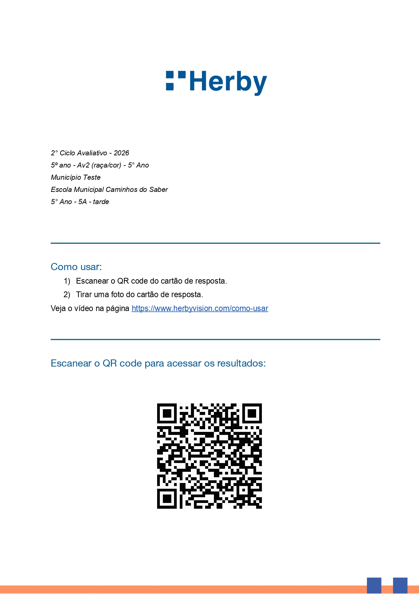
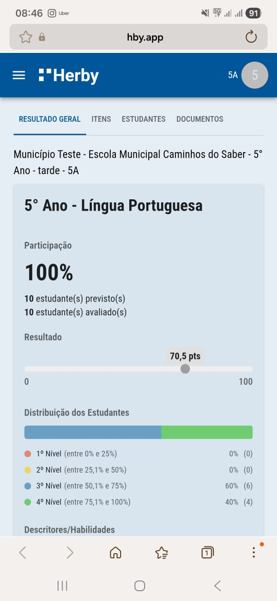

Acesso aos resultados da turma pelo QR Code impresso na capa da avaliação.
Através do QR Code disponível na capa da avaliação de turma, é possível acessar os resultados da avaliação direto pelo smartphone!

